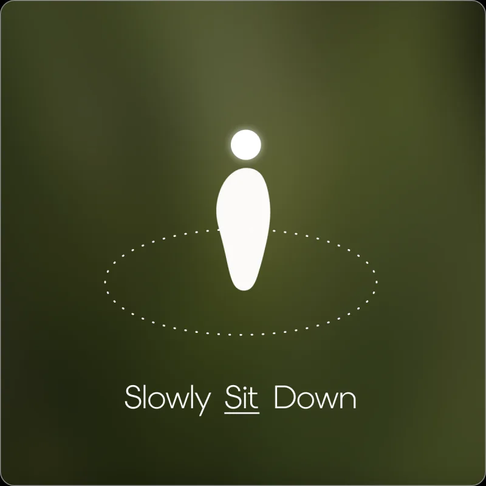
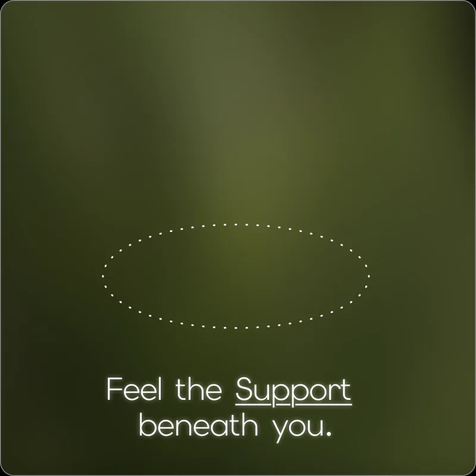
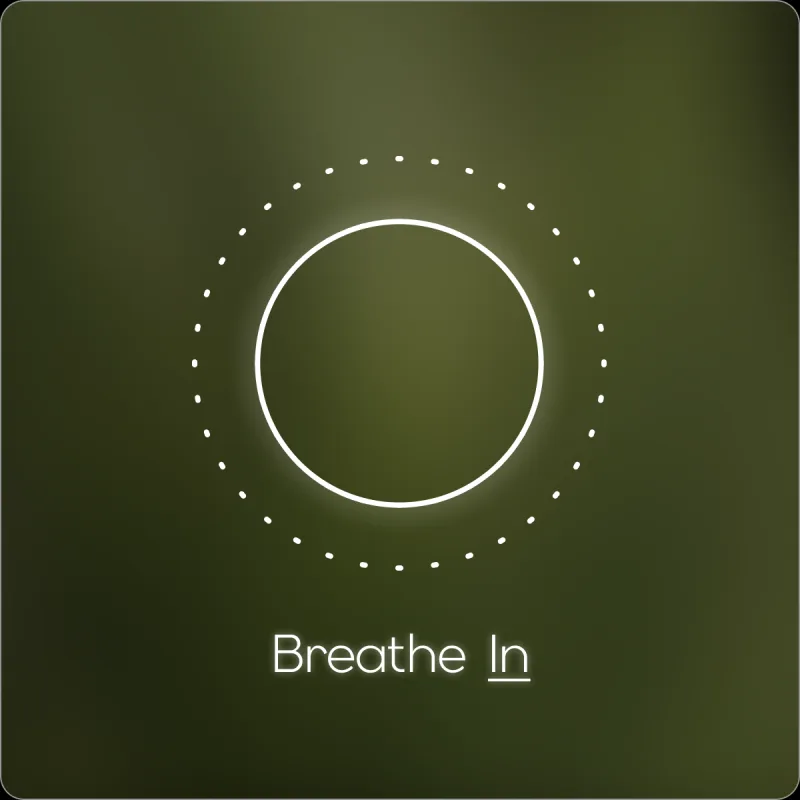
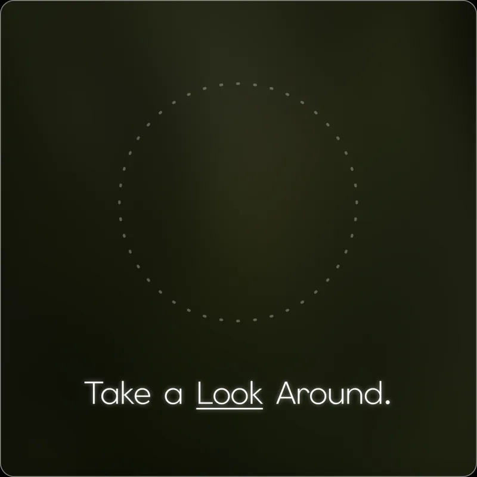

Outside, noise. Inside, one moment.
SCROLL
An emotional support assistant for smart glasses. When panic hits before an interview or an exam, MOMO guides graduating students through breathing and sensory grounding inside the lens, without taking out a phone.
- Event
- IX HACK 2026 · IDA entry
- Team
- Team 1
- Platform
- Meta Ray-Ban Display · Neural Band
- Category
- Wearables · Interaction design


My role
One of Team 1’s designers, working across the whole sprint: from the research behind the problem, to the gesture flow in the lens, to the IDA boards and the film.
- Research
- Interaction & UI design
- Visual boards
- Video & motion
The problem
Panic happens fast. Support should be faster.
Ten minutes before an interview, rehearsing turns into panic: heart racing, mind blank. Students hide it from everyone nearby, and won’t reach for a phone, so help never arrives in time. We asked how support could be easier to reach in exactly that moment.
Emotional journey
Pause, reconnect, re-enter.
Grounding brings attention back to the present. Instead of asking a panicking student to make choices, Moment follows the body back down, one sensory step at a time.
- Pause
Slow the body first
Sit down and breathe, paced by a ring in the lens. Steps 01 to 05.
- Reconnect
Anchor in the room
Touch, one real object, then sound pull attention out of the spiral. Steps 06 to 10.
- Re-enter
Walk in as yourself
Affirm that the body has reset, and return with calm that is enough. Steps 11 and 12.
Inside the lens
Twelve screens, one instruction each.
A mind in panic can’t read a paragraph. Every screen carries one short line, one key word underlined, and one shape to follow. Step through the whole reset:







A pinch on the Neural Band starts a three-minute reset.
Motion sensing notices you are still standing, and asks you to sit first.
Weight goes into the chair, and the body learns it is safe.
The ring grows and shrinks to pace each breath.
Each bead is one slow breath. The swipe gives the hands a rhythm too.
Touch pulls attention back into the body fastest.
The camera takes one snapshot of the room, with your permission.
MOMO picks one real object to anchor you. No names, no faces.
A warm cup in your hand becomes the next grounding step.
Hearing brings back the room beyond the object.
Widen the view again, at your own pace.
Return when you are ready. Pinch to exit.
How it works
Four quiet signals, no screen to unlock.
Nobody nearby should notice. Support starts with a word or a pinch, and the glasses do the sensing.
- 01
Voice activation
One voice command starts the routine, so there are fewer steps between needing support and getting it.
- 02
Neural Band gestures
Pinch to start or exit, swipe to spin the ring. Small finger moves that nobody else sees.
- 03
Motion sensing
Built-in sensors read movement and steadiness, and prompt you to sit down before continuing.
- 04
Camera + AI
One snapshot of the room turns nearby objects and colours into grounding prompts.
Privacy by design
Come back to the room, not to the people in it.
A camera on your face is a lot to ask, so the grounding step is built around restraint.
- Asks first. The camera only looks when you allow it, inside a reset you started.
- Objects only. MOMO names a colour or a thing (“the white item”), never a person or a face.
- Nothing kept. One snapshot picks a prompt, then it is gone.
Make it yours


Decide on a calm day, not in the moment.
The companion app is where the choices live: which channels to use (glasses display, voice, phone vibration, a slow heartbeat), and which breathing pattern feels right. Then, mid-panic, there is nothing left to decide.
Next project
Zen Bloom
View case study